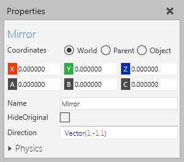
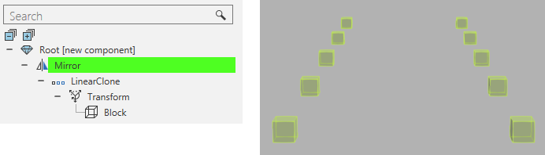

A Mirror feature mirrors and scales its child features in one to three axes.

A Mirror operation can be helpful when you want to visualize geometry and keep file size low, for example when you need to use one geometry file for pillars and support columns.

| Name | Description |
| Name | Defines the name of the feature. |
| HideOriginal | Turns on/off the hiding of the original child features. |
| Direction | Defines the direction and scale factor for mirroring child features. |
| Physics | Defines a set of physics properties for the feature. |